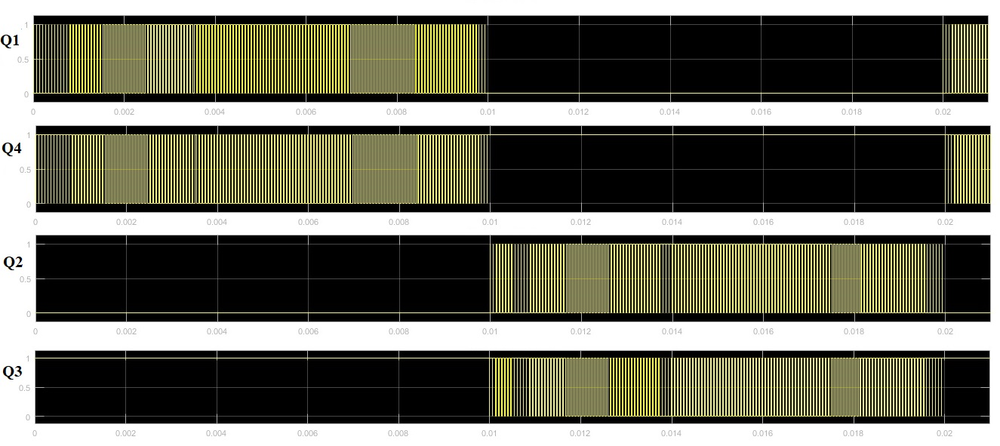
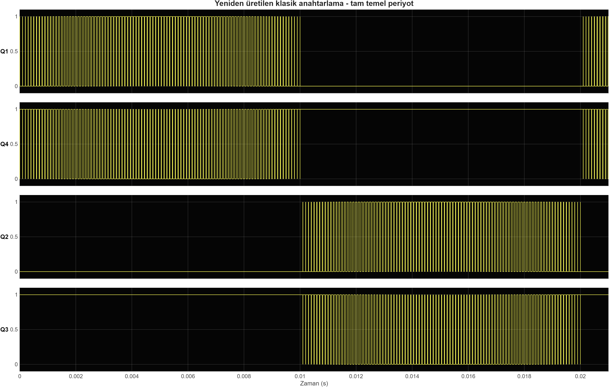
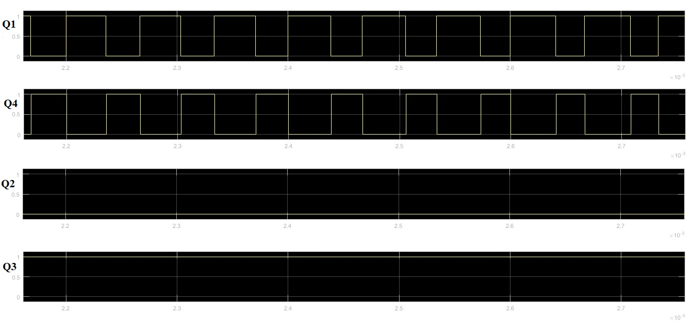
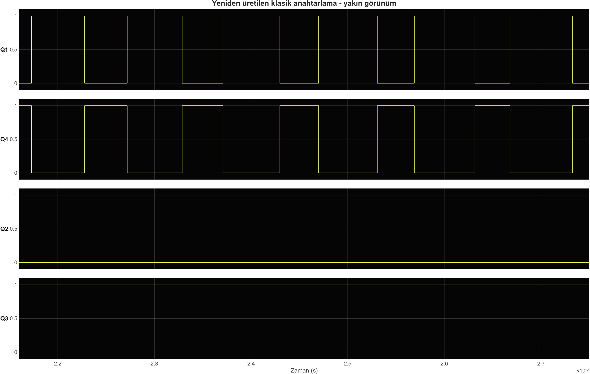

Önceki tezdeki özgün ekran

Yaklaşık 0-21 ms, kanal sırası Q1-Q4-Q2-Q3.
Eski tezdeki Scope ekranları, 13 Temmuz'da gelen parametre dosyası ve çalışma klasöründeki Q1-Q4 anahtarlama mantığı kullanılarak yeniden üretilen adaylarla yan yana verilmiştir.
Mantıksal yeniden üretim başarılı
Yaklaşık 0-21 ms, kanal sırası Q1-Q4-Q2-Q3.

50 Hz, 10 kHz, ölü zamansız PWM; aynı kanal sırası ve aynı üç anahtarlama durumu.

Yaklaşık 2,16-2,75 ms: Q1 ve Q4 tamamlayıcı, Q2=0 ve Q3=1.

Aynı pencere ve kapı ilişkisi; 10 kHz nedeniyle yaklaşık altı anahtarlama çevrimi.
| Ölçüt | Eski şekil | Yeniden üretim | Karar |
|---|---|---|---|
| Temel periyot | Yaklaşık 20 ms | 20 ms, 50 Hz | Eşleşiyor |
| Anahtarlama frekansı | Yakın görünümde yaklaşık 100 µs | 10 kHz, 100 µs | Eşleşiyor |
| Kanal sırası | Q1, Q4, Q2, Q3 | Q1, Q4, Q2, Q3 | Eşleşiyor |
| Pozitif alternans | Q1=PWM, Q4=tümleyen, Q2=0, Q3=1 | Aynı mantık | Eşleşiyor |
| İzinli durumlar | Görselden P/O/N dizilimi | P=1010, O=0011, N=0101 | Eşleşiyor |
| Ölü zaman | Scope görüntüsünden doğrulanamıyor | Gelen dosyaya göre kapalı | Kesin kaynak kod bekliyor |
| Modülasyon indeksi ve taşıyıcı fazı | Dosyada yazmıyor | m=0,86; bizim deneme parametremiz | Bire bir sayısal eşlik kanıtlanmadı |
Şekil 4.1 ve 4.2 yeniden üretilebiliyor. Yeniden üretim, eski şekillerdeki kapı sırasını, alternans davranışını, 10 kHz anahtarlama periyodunu ve P/O/N durumlarını karşılıyor. Yalnız özgün modülasyon indeksi, taşıyıcı başlangıç fazı ve gerçek sürücü ölü zamanı bilinmediği için adaylar henüz eski ekranların kesin sayısal kopyası sayılmamalıdır.
Tezdeki sarı etiketli eski ekranlar şimdilik korunmalı; özgün PWM kodu veya gerçek .slx geldiğinde yeniden üretilen şekiller ana kanıt olarak kullanılmalıdır.